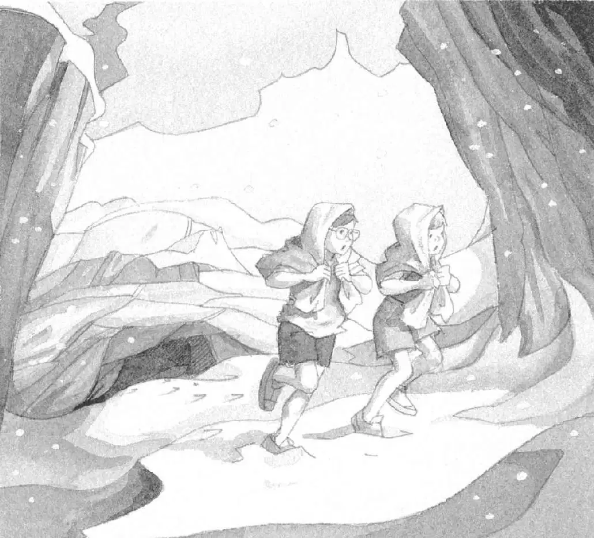

“安妮！”杰克又压低声音叫道。
安妮没有回答。杰克把书轻轻地放进了背包，往洞穴的深处走去。
“安妮！”他稍稍提高了一点儿声音。
他的脚踩在了骨头上。
那种淋湿的狗所散发的气味儿更强烈了。
他继续往前走，走进臭烘烘、黑乎乎的洞穴深处。
突然，他撞到了什么东西，吓得倒抽了一口冷气。
“杰克？”安妮问，“是你吗？”
“你没听见我叫你吗？”杰克轻声说道，“我们必须赶快离开这儿！”
“等一等，”安妮说，“有人在那里面睡觉，你听见打呼声了吗？”
杰克听见一阵低沉而浑厚的呼噜声。高一声，低一声。高一声，低一声。
“那不是人，”杰克说道，“是一头大洞熊！”
雷鸣般的打呼声，震得空气都在颤动。

“哎呀！”安妮吓了一跳。
“快走！快走！”杰克催促道。
他和安妮在洞穴里奔跑，脚下踩着那些骨头，一口气跑到外面纷飞的雪花中。
他们一个劲儿地往前跑。在坠落的岩石间奔跑，在怪石嶙峋的悬崖下奔跑。
终于，他们停下脚步，转过身去。
眼前只有茫茫的白雪、岩石，还有他们自己的脚印。
大洞熊没有追上来。
“刚才好险哪，”安妮说，“幸亏运气还不错。”
“是啊，”杰克说，“它可能一直都没醒过来。我们只是自己吓自己。”
安妮往杰克身边靠了靠。“啊！我快要冻死了。”她说。
“我也是。”杰克回答。
他摘下眼镜，擦去镜片上的雪花。寒风呼呼地吹着他的光腿。
“哇！”安妮说，“你看。”她指着杰克身后的什么东西。
“什么？”杰克把眼镜重新戴上，转身问道。
悬崖下面有一大块突出的岩石。岩石下面是另一个洞穴。
洞穴里好像透出了一点儿黄色的亮光。
它看上去舒适、安全、温暖。